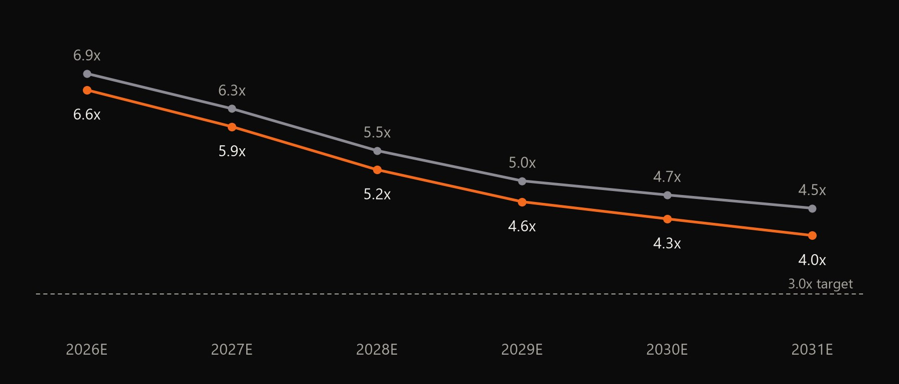
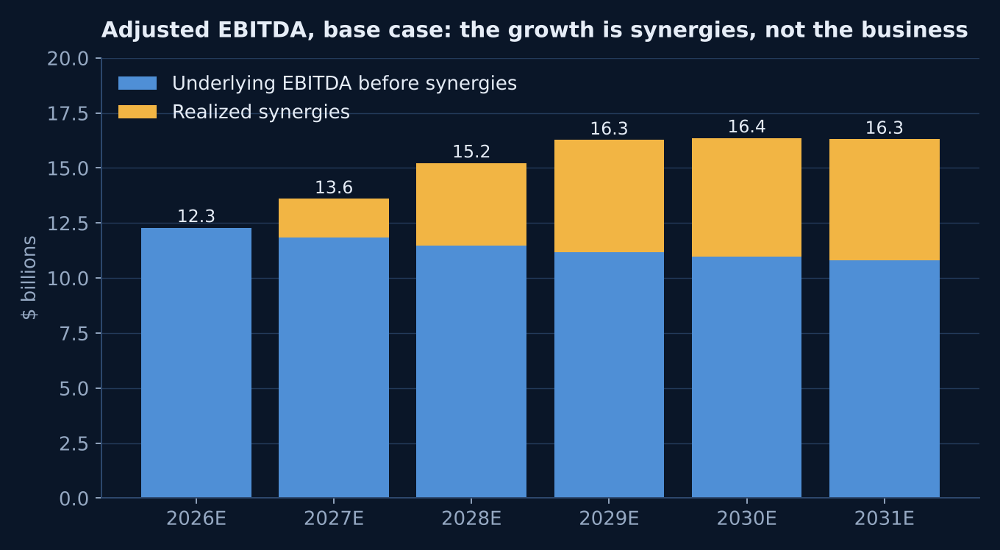
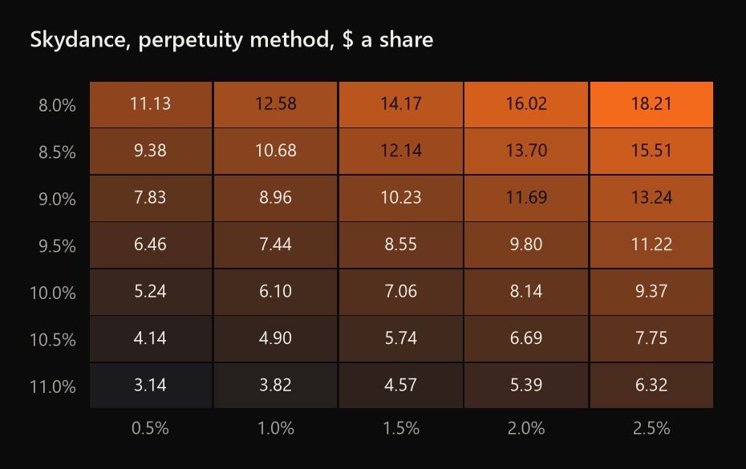

Skydance DCF model.

What is the company that bought Warner Bros. Discovery worth?
In short
- The question
- What is Skydance worth, and can it carry $87 billion of debt?
- Data and method
- A pro forma base year from filings, three revenue lines, a synergy line and a 9.2 percent WACC.
- What I found
- $9.45 a share on one method and $5.63 on the other, against $6.50. In the bear case the equity is worth almost nothing.
- What it means
- Every free dollar to debt gets leverage to 4.6 times in 2029. The target is 3.0.
The price sits between the two methods
Perpetuity method, on the debt reported in November. It was $8.80 in October.
Exit multiple at 7 times 2031 EBITDA. It was $4.97.
The close on November 24. It was $7.77 when I built the model.
Net debt to EBITDA. Press reports put S&P at 7.6 and Fitch at 7.8.
EBITDA to interest, on about $6 billion a year.
Share of enterprise value in the terminal value.
These are model outputs under stated assumptions. Nothing on this page is a recommendation to buy or sell anything.
The October model in four pictures

Where the EBITDA growth comes fromEvery dollar of growth from 2026 to 2031 is realized synergies. 
Unlevered free cash flowConversion rises from about half of EBITDA to two thirds. It does not reach management's target. 
Cost of capital against long term growthOne point of discount rate moves the value by $3 to $4 a share. 
Four answers on one lineOctober values. The October price fell inside every range.


Why this company
I covered the Paramount Skydance tender at Finsight and wanted to value a company whose bonds I had watched trade. By the time I built it, Paramount Skydance had closed its $110 billion purchase of Warner Bros. Discovery and become Skydance Corporation, SKYD on the NYSE. So the model values the combined company: about $67 billion of revenue, $87 billion of gross debt and 5.04 billion shares.
The deal was paid for with $47 billion of new equity at $12 a share and $57 billion of new secured debt. S&P cut the company to BB, and in October Debtwire had the old Paramount bonds yielding 10 to 13 percent. With that capital structure, the discount rate is a harder judgment than the forecast.
How it is built
- Base year. Paramount Skydance's fiscal 2025 results plus Warner Bros. Discovery's, giving $66 billion of revenue and $12 billion of adjusted EBITDA, which matches the pro forma 8-K and the Street's 2026 consensus.
- Revenue. Three lines, streaming, linear networks and studios, each with its own growth path. Streaming grows 9 percent fading to 4, linear falls 8 percent fading to 6, studios grow 3.
- EBITDA. An underlying margin that drifts down as linear shrinks, plus a separate synergy line so the reader can see how much of the value is the merger.
- Cash flow. EBITDA less stock compensation, integration cash costs, cash taxes at 23 percent, capex at 2.1 percent of revenue and a content and working capital line. Stock compensation is treated as a real cost.
- Discount rate. A 0.9 unlevered media beta relevered for a 2.2 debt to equity ratio gives a 2.4 levered beta and a 15.7 percent cost of equity. An 8 percent cost of debt, blended from the new 7.05 and 8.875 percent notes and the legacy unsecured yields, at market weights gives a 9.2 percent WACC.
- Equity bridge. Enterprise value less $80.9 billion of net debt and $1 billion of noncontrolling interests, over 5.04 billion shares. The October sheets use Debtwire's $84.3 billion. The 471 million warrants struck at $12 dilute only when the value is above $12, by the treasury stock method.
- Three scenarios on one switch: base, bear and management's plan.
- Four peers and a credit comp on the same template. Netflix, Disney, Comcast and Fox, built the same way, then leverage, coverage and cushion across all five. See Media DCF models and credit comps.
What I got wrong first
My first pass used Paramount Skydance's own filings: $30 billion of revenue, $15 billion of debt, 1.1 billion shares. The company that trades today is twice that size with six times the debt. That would have produced a precise answer for a company that no longer trades, so I rebuilt the base year from both companies' filings.
Then the debt. I used Debtwire's estimate at close, $89.3 billion of debt and $5 billion of cash. On November 9 the company reported $87 billion and about $10 billion. Part of that cash is set aside, including about $3.9 billion to pay off a securitization, so the fair comparison is $80.9 billion of net debt against my $84.3 billion. I had interest at $6.7 billion. The 10-Q, as quoted in the press, says about $6 billion, so coverage is 2.0 times and not 1.8.
I also wrote that November 9 would be the first combined report. It was Paramount alone, because the deal closed on October 6, after the quarter ended.
What would change the answer
- Synergy realization. The base case takes $5.4 billion of the $6 billion target by 2030. Each $1 billion of run rate synergies is worth about $1.50 a share.
- Linear decline. Three points a year faster, which is what Warner Bros. Discovery's linear networks did in the second quarter of 2026, takes the base case most of the way to the bear case.
- The discount rate. Market weights give 9.2 percent. If management reaches its 3.0 times leverage target by 2029, the equity weight rises and so does the WACC, which lowers the value even as the business gets safer.
- Content cash spend. It sits inside the working capital line at about 1 percent of revenue and I could not source it. The fourth quarter will be the first combined report, and the first check on it.
Since the model
- The price. $7.77 on October 23, $8.70 on November 9 and $6.50 on November 24. The model still sits on both sides of it.
- The third quarter. Paramount alone, with $7.03 billion of revenue. Management expects $3.9 billion of adjusted EBITDA for it in 2026. I had $3.85 billion.
- Synergies. Management now says 30 percent of at least $6 billion in year one and 70 percent through year two. I have $1.75 billion in 2027 and $3.75 billion in 2028, a little below that.
- Cost to get there. About $4 billion, per management. I spend $7.1 billion, so my base case is the harsher one.
- Equity. Elon Musk put in about $1 billion on October 22, per Semafor and CNBC. Reaching 3.0 times at today's EBITDA means cutting about $44 billion of net debt.
- What is missing. Public counts of the debt run from $80 billion to $89 billion. The fourth quarter balance sheet should settle it.
The model and its sources
Blue cells are inputs. 23 numbered sources, mostly SEC filings. The November numbers are on their own sheet. Nothing from a Bloomberg Terminal or any employer.